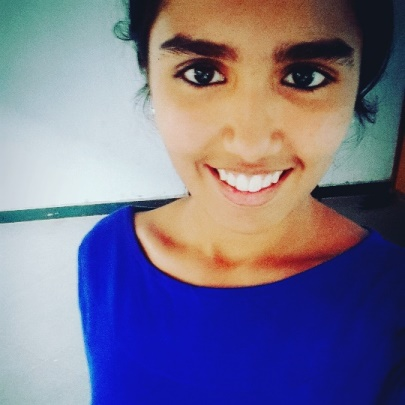
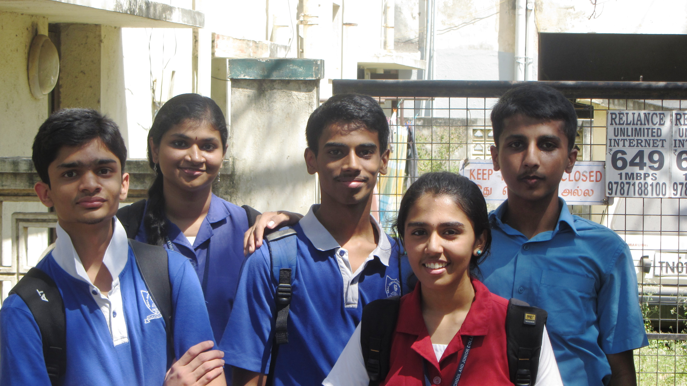
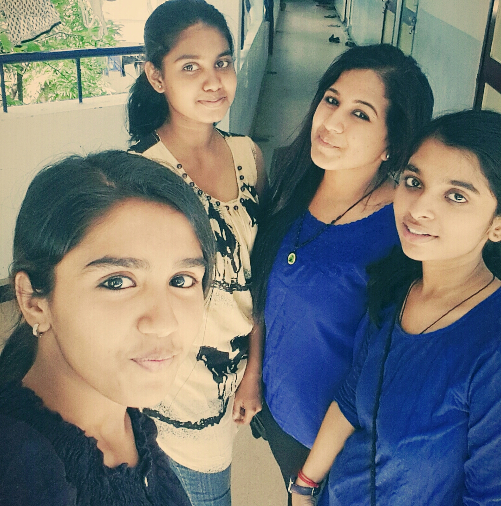

Introduction

I'm Sandhya Krishnakumar, currently doing my B.Tech.., in Electrical and Electronics Engineering at National Institute of Technology, Trichy.
My birthday falls on 28th October and I'm 18 years old. I was born in Bangalore. I'm a Tamilian. I have a younger sister who is doing her 12th grade in S.B.O.A. School and Junior College.
My father is a bank executive and my mom is a home maker. I love my little family a lot. I'm basically a very friendly person and I'm very flexible when it comes to friendship and good in maintaining them too. I care for my peers a lot. I always wanted to take Computer Science and Engineering in college. But due to my bad JEE rank I couldnot take it at NIT. And, hence, I want to get into one of the clubs which has a coding profile and I'm working for it and will work for it :)
School Life

My school life started when I was 3 years old. I attended Montessori at Hymanshu Jyothi Kala Peeta in Bangalore. When I was in 2nd standard, papa got transferred to Trichy and we lived there for 3 years and I did my schooling at Sri Akilandeswari Vidyalaya. We moved to Chennai when I was in 5th and this is where the actual school life started for me. I studied at S.B.O.A. School and Junior College. I was in the same class till 10th grade and I'm really happy that I was a dear friend to all my classmates. And there was class shuffling in 11th grade and I moved to a new class where each and every person was an alien to me. Guess what?? People in my new class loved me a lot and building up "new friendship" was not really hard in 2 years. My friends love me because they feel I keep the environment lively and also I don't pick up unwanted fights and am very straight-forward in giving opinions. I'm happy that till date, I'm able to keep a good relationship with all my school friends.
College Life

It's been a year since I joined NIT Trichy and the hostel life has taught me how to self-introspect and also made me realise that I'm responsible for whatever I do. To start off, I was alloted Mechanical Engineering initially. We had 21 days of orientation. The chilled out bridge courses, Trichy and Tanjore visit, early morning yoga classes, wandering with cycles in the evening, meeting new people, socialising was so much fun. I had applied for sliding and the results were out by then and I moved to Electrical and Electronics Engineering. My friends Jaya and Meghana were my classmates. My class was a very quiet and a nerdy class and hence I didnot talk to a lot of people. In the second semester we went on a department outing where I got to interact with a lot of my department people. We, a small gang of people strated hanging out together and we are really close friends now. I thoroughly enjoyed my first FESTEMBER AND PRAGYAN. NITTFEST was the best fest as I got to know a lot of really friendly seniors who are close to my heart. I've been inducted into the FESTEMBER WORKSHOPS AND INFORMALS TEAM recently. Also, I'm looking forward to get inducted into a coding club and learn new things and do new things that my department can never teach me in 4 years. I'm a quarter engineer now and I'm looking forward for the next 3 years in this college.
Hobbies and Talents

Both my talent and hobby has a musical touch. I learnt carnatic music for 7 years and my family has a musical background. My father sings really well and yeah, my singing is bearable :P Out of my own interest I sing and record songs. I listen to a lot of Indian music and it's my favorite too. AR.Rahman is one of the greatest music director and I've always been fascinated by his tunes. Also I try out a lot of new and crazy things. Chit-chatting is my hobby too :P Others hobbies are watching movies.